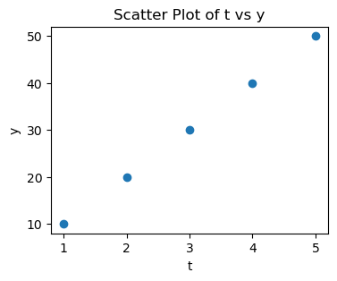

price = 8700.495
print(f"单价为 ￥{price:,.2f} 元")单价为 ￥8,700.50 元Python 格式化字符串进阶：f-string 格式控制符一览，轻松掌握 .2f, :,, >, ^, % 的使用方法。
参见
字符串是 序列类型 ，支持序列类型的各种操作。
字符串支持很多变形与查找方法。
内嵌表达式的字符串字面值。
使用 str.format() 格式化字符串。
这里详述了用 % 运算符格式化字符串的操作。
基本语法形式为：
f"{变量名:格式说明}"其中 : 后面的 格式说明 部分就是 格式控制符（Format Specifier），用于控制数值的显示样式。
| 控制符 | 含义 | 示例 | 输出示例 |
|---|---|---|---|
.2f |
保留两位小数 | {3.1415:.2f} |
3.14 |
, |
添加千位分隔符 | {1000000:,} |
1,000,000 |
% |
百分比表示，自动 ×100 并加 % | {0.85:%} |
85.000000% |
.1% |
百分比保留一位小数 | {0.85:.1%} |
85.0% |
>10 |
右对齐，占 10 个字符宽度 | "{'abc':>10}" |
' abc' |
<10 |
左对齐，占 10 个字符宽度 | "{'abc':<10}" |
'abc ' |
^10 |
居中对齐，占 10 个字符宽度 | "{'abc':^10}" |
' abc ' |
0>5 |
用 0 补齐左侧，宽度为 5 | {42:0>5} |
00042 |
price = 8700.495
print(f"单价为 ￥{price:,.2f} 元")
# 输出：单价为 ￥8,700.50 元注意：本例中，: 后面设定了两种格式控制符，一个是 , (添加千分位符)；另一个是 .2f (保留两位小数，自动四舍五入)。
price = 8700.495
print(f"单价为 ￥{price:,.2f} 元")单价为 ￥8,700.50 元rate = 0.0826
print(f"年化收益率为 {rate:.2%}")
# 输出：
# 年化收益率为 8.26%name = "Tom"
print(f"|{name:<10}|") # 左对齐
print(f"|{name:^10}|") # 居中对齐
print(f"|{name:>10}|") # 右对齐|Tom |
| Tom |
| Tom|# 更复杂的例子
names = ["Tom", "Rebbeca"]
ages = [25, 30]
print(f"|{'Name':<10}|{'Age':^10}|") # 表头
print(f"|{'-'*10}|{'-'*10}|") # 分隔线
print(f"|{names[0]:<10}|{ages[0]:^10}|") # 第一个人左对齐
print(f"|{names[1]:<10}|{ages[1]:^10}|") # 第二个人右对齐|Name | Age |
|----------|----------|
|Tom | 25 |
|Rebbeca | 30 |# 进一步扩展：自定义列宽
names = ["Tom", "Rebbeca"]
ages = [25, 30]
col_width = 15 # 列宽
print(f"|{'Name':<{col_width}}|{'Age':^{col_width}}|") # 表头
print(f"|{'-'*col_width}|{'-'*col_width}|") # 分隔线
print(f"|{names[0]:<{col_width}}|{ages[0]:^{col_width}}|") # 第一列左对齐
print(f"|{names[1]:<{col_width}}|{ages[1]:^{col_width}}|") # 第二列居中对齐|Name | Age |
|---------------|---------------|
|Tom | 25 |
|Rebbeca | 30 |需要说明的是，print(f"|{'-'*{col_width}}|{'-'*{col_width}}|") 中的
Q = 5
print("I have Q apples")
print("I have {Q} apples")
print(f"I have {Q} apples")I have Q apples
I have {Q} apples
I have 5 applesprint('~'*10)
times = 10
print(f"'~'*times")
print(f"'~'*{times}")
print(f"{'~'*times}")
# print(f"{'~'*{times}}") # 语法错误~~~~~~~~~~
'~'*times
'~'*10
~~~~~~~~~~order = 42
print(f"订单号：{order:06d}") # 总共6位，前面补0
# 输出：
# 订单号：000042你可以同时使用多个控制符：
price = 1234567.89
print(f"￥{price:>15,.2f}")
# 输出：
# ￥ 1,234,567.89 （右对齐，千位分隔，保留两位）[[fill]align][sign][#][0][width][,][.precision][type]例如：
f"{num:0>10,.2f}"解释如下：
0：填充字符>：右对齐10：宽度为 10,：加千分位.2f：保留两位小数| 任务 | 格式说明符 |
|---|---|
| 金额显示（带逗号） | :,.2f |
| 百分比 | :.1% |
| 补零编号 | :05d 或 :06d |
| 对齐文字输出 | :>10, :<10, :^10 |
如果你希望我整理一个 格式控制速查表 PDF 或 .md 文件版本，我可以帮你制作一份，可随时查阅使用。需要吗？
import matplotlib.pyplot as plt
# Generate data
t = [1, 2, 3, 4, 5]
y = [10, 20, 30, 40, 50]
# Plot scatter plot
plt.figure(figsize=(4, 3))
plt.scatter(t, y)
plt.xlabel('t')
plt.ylabel('y')
plt.title('Scatter Plot of t vs y')
plt.show()